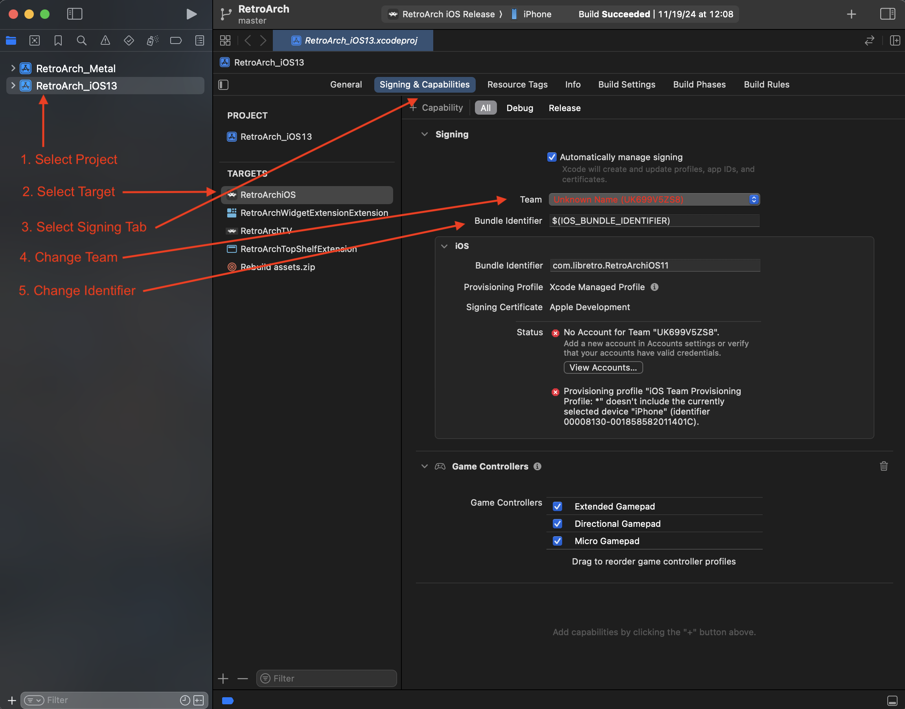

iOS Compilation / Development Guide¶
The following is a non-developer guide to install RetroArch on non-jailbroken iOS or tvOS devices.
The minimum version of iOS supported is iOS 6.0. However, older versions have fewer features and worse core support. Additionally, building for old versions of iOS requires old versions of Xcode, which require old versions of macOS, all of which may be hard to come by.
Note
If you just want to sideload from an IPA file, then you can find a working build (version 1.22.2) here for tvOS and here for iOS. Instructions for installing the IPA are here.
Because iOS requires that all code be signed, iOS does not support installing/updating cores at runtime. Instead, all cores must be built and added to the RetroArch source tree before building RetroArch.
Environment configuration¶
Xcode¶
The only requirement for building is Xcode, which is only available for macOS. You can get Xcode from the App Store. If you have never used Xcode before, you will need to open the Xcode preferences, and in Accounts, log in with your Apple ID.
Sign in with your Apple ID¶
- Open Xcode Preferences (Xcode -> Preferences)
- Click the "Accounts" tab
- Hit the "+" at the bottom left and choose "Apple ID" and sign in with your Apple ID
- Once you’ve successfully logged in, a new team called "(Your Name) Personal Team" with the role "User" will appear beneath your Apple ID.
Pair Xcode with your iOS or tvOS Device¶
Connect your iPhone to your computer. For AppleTV, because you cannot connect it directly, follow the instructions in this Apple support article to pair your device in Xcode. When finished, you should see your specific device when you go, in Xcode, to Windows -> Devices & Simulators.
retroarch-apple-deps (optional but recommended)¶
RetroArch optionally will automatically link with supporting libraries (including MoltenVK) that are provided by the retroarch-apple-deps repo. By default Xcode will look for these dependencies in /usr/local/share/retroarch-apple-deps.
To get retroarch-apple-deps, run:
git clone https://github.com/warmenhoven/retroarch-apple-deps.git retroarch-apple-deps
sudo ln -s $PWD/retroarch-apple-deps /usr/local/share
Fetching the code¶
libretro-super¶
The easiest way to fetch the source code for RetroArch and all the cores is to use libretro-super. Open Terminal (it's in /Applications/Utilities) and run the following commands:
You can run the following command to download the source for RetroArch as well as all of the cores:
Or you can run the following command to download the source for RetroArch only:
Or specify just the cores that you want:
RetroArch repo¶
If you choose not to use libretro-super, you can clone RetroArch's repository from GitHub
For subsequent builds you only need to pull the changes from the repo
To update your local copy from the repository run git pull.
Cores¶
Emulator cores are needed to use RetroArch as they contain the code that drives the emulation of the system of the game you want to play. All of the cores should have the extension .dylib and be placed in the RetroArch source tree in the directory pkg/apple/iOS/modules (pkg/apple/tvOS/modules for tvOS).
Downloading Pre-Built Cores¶
Pre-built cores are available from the buildbot for iOS here and for tvOS here. You can also use the update-cores.sh script in the RetroArch source tree to fetch the cores from the buildbot for you:
Without any arguments, it will try to update all of the cores in pkg/apple/iOS/modules. If there are no cores already downloaded, it will list the cores that are available to download. Any arguments are treated as core names and it will try to download that core if it is not already available.
Building Cores¶
Instead of downloading pre-built cores, you can build the cores yourself. The easiest way to build all the cores is to use libretro-super.
To build for iOS 11 and up, run:
To build cores for iOS 9 and up, run:
To build cores for iOS 6 to 8, run:
In case you only want to build one and/or more cores instead of all, you can specify the cores you want to build after the first command in no particular order. E.g.:
Once finished, you can find the libretro cores inside directory dist/ios-arm64, dist/ios9 or dist/ios depending on which build script you ran.
Code Signing the Cores¶
Note that you must code sign the dylib cores in order for you to use them.
In iOS 9 and above¶
Starting from iOS 9, the cores must be packaged as part of the application, even if they are code-signed. This was an additional security measure introduced in iOS 9. Fortunately, the code signing is handled as part of the Xcode build/archive process, so all you need to do is place your compiled .dylib cores in the pkg/apple/iOS/modules folder. Running the application via Xcode or archiving the application for an adhoc distribution will codesign the cores as long as they are placed in the aforementioned pkg/apple/iOS/modules folder.
In iOS 6 to 8¶
You need to manually code sign the cores, and then you can copy them to the Documents/RetroArch/cores directory using an application like "iFunBox" or "iExplorer".
Building RetroArch¶
There are multiple Xcode project files in pkg/apple, based on minimum iOS version. The following will use pkg/apple/RetroArch_iOS13.xcodeproj (the latest as of this writing) as an example.
- Open Xcode.
- Open the following project file
pkg/apple/RetroArch_iOS13.xcodeproj - Change the identifiers and signing for the target
- In the Navigator Pane on the left, select the
Retroarch_iOS13project - In the Project and Targets list on the left side, choose the
RetroArchiOS(orRetroArchTVfor tvOS) target. Select the Target (the one with the RetroArch icon), not the project. - In the
Signing & Capabilitiestab, change the "Team" under Signing to be your developer name. - In the
Signing & Capabilitiestab, Change the "Bundle Identifier" to something globally unique (e.g.your.email.address.RetroArch).
- In the Navigator Pane on the left, select the
- Change the signing for the extensions
- In the Navigator Pane on the left, select the
Retroarch_iOS13project - In the Project and Targets list on the left side, choose the
RetroArchWidgetExtensionExtension(orRetroArchTopShelfExtensionfor tvOS) target. - In the
Signing & Capabilitiestab, change the "Team" under Signing to be your developer name. - In the
Signing & Capabilitiestab, Change the "Bundle Identifier" to the bundle identifier you chose for the target plus a suffix (e.g.your.email.address.RetroArch.RetroArchWidgetExtension). - For tvOS, in order for Top Shelf to work, you additionally need to set up the App Groups properly, described below.
- In the Navigator Pane on the left, select the
- Set the active scheme to
RetroArch iOS Release(orRetroArch tvOS Releasefor tvOS), and select your connected iOS/tvOS device as the device. - Run (⌘-R)

Once the application has been built, installed, and run on your device, it can be run again directly from the device without needing Xcode.
App Store Build¶
Building for the Mac App Store requires being logged into Xcode with the Apple Developer account associated with the Bundle ID for the app. The app also builds with Push Notification and CloudKit entitlements for the iCloud cloud sync driver (and Top Shelf for tvOS). Once all of the signing and entitlements are set up, creating the build is simply changing the scheme to RetroArch AppStore.
There is an automated fastlane script available in pkg/apple/fastlane that will update the build numbers and upload the built prodduct to TestFlight using an App Store Connect API Key.
Additional Tips:¶
Cores¶
-
When you run RetroArch and try to run a game, and see the message "Failed to load libretro core", that means the core is not code signed. See the above "Code Signing the Cores" section on making sure your cores are signed. You can manually check the code signature on a file by doing:
codesign -dvv mednafen_psx_libretro_ios.dylib. The Authority entry has your certificate - make sure it's your dev or adhoc distribution certificate. -
To see if your core is valid and usable in RetroArch, you can also try Load Core and selecting the core. If you see the core name appear at the top (in the GUI menu), then it is properly codesigned and loaded. If you still see "No Core", then your core is not codesigned and cannot be used.
Top Shelf¶
Top Shelf for tvOS will display up to five entries from each of the History and Favorites playlists, but is not compiled by default. The Top Shelf extension runs as in a different sandbox, and sharing the playlists requires the use of App Groups. In order to enable the Top Shelf extension:
- With the project selected, select the RetroArchTV target. In the
Signing & Capabilitiestab, add theApp Groupscapability, and provide a unique group identifier. - You will also need to provide a unique app/bundle identifier. This will have the effect of breaking updating from a prior version of the app, as the app data will not be copied over due to the new bundle identifier.
- Select the RetroArchTopShelfExtension target. In the
Signing & Capabilitiestab, add theApp Groupscapability, and provide the same unique group identifier. - You will also need to provide a unique app/bundle identifier for the extension.
- In
pkg/apple/RetroArchTopShelfExtension/ContentProvider.h, change the value ofkRetroArchAppGroupto be the same unique group identifier.
Development¶
Where do I start?¶
The RetroArch codebase can be daunting, especially if you're used to iOS development in Objective C or Swift. Objective C is a superset of C so the syntax should look somewhat familiar to you.
The first and main entrypoint you should look at is in core/griffin/griffin.c. This is where all the code is included, with compiler flags used to bring in code specific to the platform. For iOS, you should pay attention to the compiler flags like __APPLE__, TARGET_OS_IPHONE, HAVE_COCOATOUCH.
Note that you can Cmd-click into the #include paths to peer into the source code. You can also Cmd-Shift-O and type in the source file as well. And, breakpoints work as well!
The iOS specific code is in core/griffin/griffin_objc.m. Here you'll find the include to ./ui/drivers/ui_cocoatouch.m, which contains the application delegate - the main entry point for the iOS application lifecycle. From there everything should look familiar to you as an iOS developer, and you should be able to hook in any iOS specific objective c code. Although you can use Objective C data structures and code, you'll probably be having to use C data structures since you'll have to call methods in C to hook back into RetroArch, and they will expect C data structures. The great thing is you can mix C code with Objective C, as long as you do the necessary conversions to the data structures that RetroArch expects.